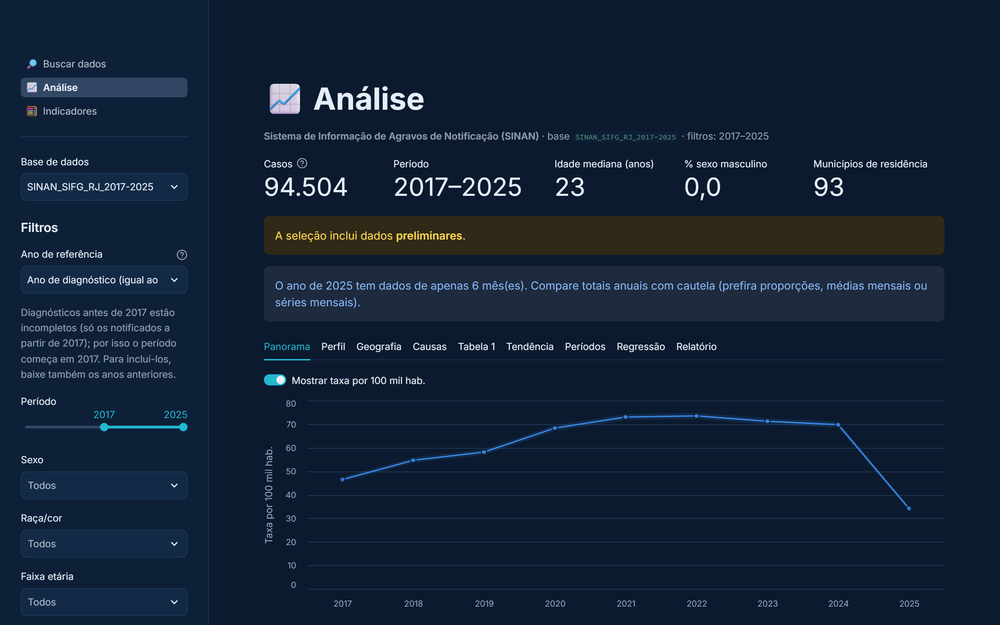
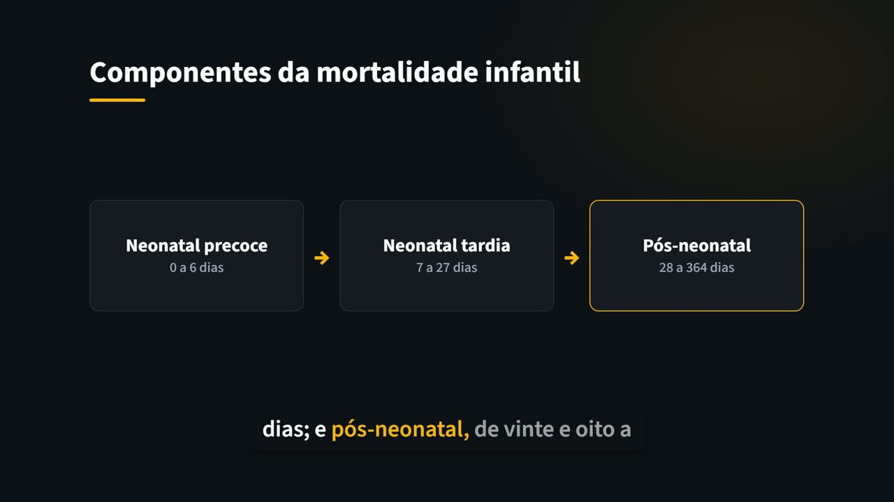
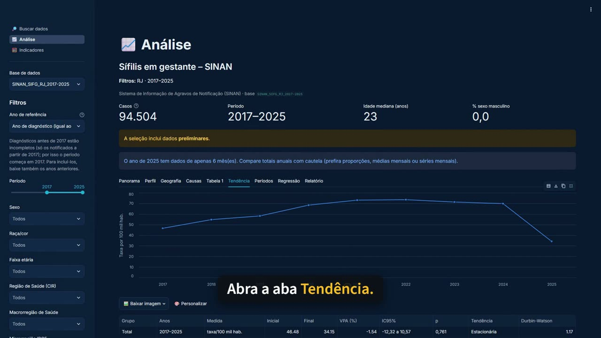
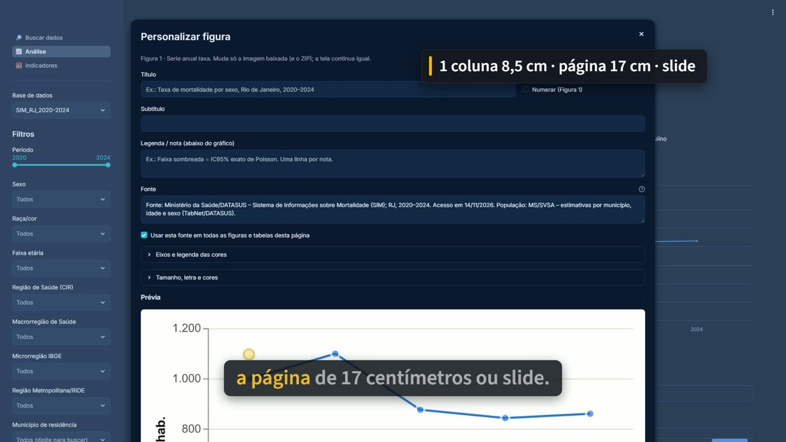
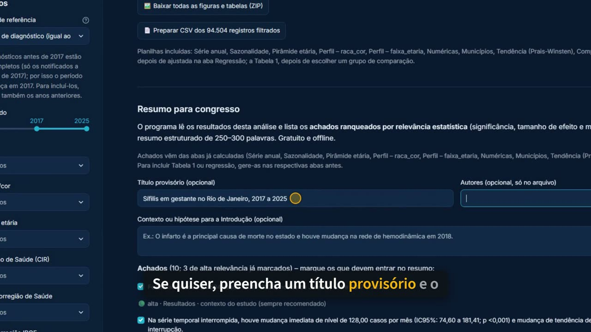

Do DATASUS ao Congresso
Aprenda a baixar microdados oficiais do SUS, calcular indicadores, fazer a estatística e chegar ao resumo para congresso, tudo com cliques, sem escrever uma linha de código.
- Acesso vitalício
- Garantia de 7 dias
- Programa gratuito incluso

Os dados do SUS são públicos. Usar é que é difícil.
Quase todo trabalho de residência, TCC ou liga acadêmica esbarra nos mesmos obstáculos. O curso mostra o caminho completo com um programa gratuito que faz o trabalho pesado.
Sem o método
- Arquivos .dbc que o Excel não abre
- Códigos de variáveis sem explicação
- Tabelas do TabNet montadas uma a uma
- Dúvida sobre qual teste estatístico usar
- Prazo do congresso chegando e nenhum resultado
Depois do curso
- Base baixada e decodificada em minutos
- Dicionário de variáveis e citação da fonte prontos
- Taxas com IC95%, conferidas com o TabNet
- Tabela 1, tendência e regressão com o texto de métodos
- Rascunho do resumo IMRD para você revisar e submeter
Do primeiro download ao resumo submetido
Cada módulo termina com algo que você consegue fazer sozinho na sua própria pesquisa.
Buscar e organizar dados
Escolher sistema, UF, período e CID-10, e sair com a base pronta em Excel, CSV ou Stata.
Conhecer cada sistema
O que o SIM, o SINASC, o SIH, o SINAN, o SIA e o CNES registram, e os cuidados de cada um.
Calcular indicadores
Mortalidade infantil e materna, incidência, internação, letalidade e DCNT, com o denominador certo.
Estatística sem mistério
Taxas e IC95%, p-valor, Tabela 1, Prais-Winsten, série temporal interrompida e regressão logística.
Figuras para publicação
Gráficos, mapas e tabelas em PNG 300 dpi ou SVG, com título, legenda e fonte, todos num ZIP.
Resumo para congresso
Escolher os achados que importam e montar o resumo IMRD de 250 a 300 palavras.
Tela real do programa, passo a passo
Você vê exatamente onde clicar, com legendas e animações curtas para explicar os conceitos.




Feito para quem pesquisa na saúde
Você não precisa saber programar nem ter feito curso de estatística. Precisa só de um computador com Windows.
Residentes
Que precisam de um trabalho de conclusão com dados reais e prazo curto.
Pós-graduandos
Que querem um estudo ecológico ou de tendência bem feito, com métodos claros.
Ligas acadêmicas
Que querem levar trabalhos a congressos todo semestre.
Profissionais do SUS
Que querem olhar os dados do próprio município ou região.
As 42 aulas
Assista na ordem ou vá direto ao módulo de que você precisa agora.
Do DATASUS ao Congresso
- 42 aulas em 13 módulos
- Acesso vitalício, no computador e no celular
- Programa Data-SUS gratuito e de código aberto
- Garantia incondicional de 7 dias
Pagamento seguro pela Hotmart. O acesso é liberado assim que o pagamento é confirmado.
Dúvidas comuns
Preciso saber programar?
Não. Tudo é feito pela interface do Data-SUS, que abre no navegador. Você escolhe opções e clica em botões; o curso mostra cada clique.
O programa é pago?
Não. O Data-SUS é gratuito e de código aberto, e você pode baixá-lo antes mesmo de comprar o curso. O curso ensina o método: qual base usar, como calcular cada indicador, como interpretar a estatística e como transformar o resultado em resumo.
Que computador eu preciso?
Um PC com Windows e 8 GB de memória dá conta. O programa roda no seu computador, sem servidor e sem assinatura. A instalação é mostrada passo a passo nas aulas 1.1 e 1.2.
Os resultados são confiáveis?
Os dados vêm direto do DATASUS e os indicadores foram conferidos com o TabNet, a ferramenta oficial do Ministério da Saúde. O curso também mostra os limites de cada base, para você não tirar conclusões que os dados não sustentam.
Por quanto tempo tenho acesso?
Para sempre. O acesso é vitalício, na área de membros da Hotmart, pelo computador ou pelo aplicativo no celular.
E se eu não gostar?
Você tem 7 dias de garantia. Se o curso não for para você, peça o reembolso pela própria Hotmart dentro desse prazo e recebe o valor de volta.
Tenho outra dúvida. Com quem falo?
Escreva para arthursildelphino@gmail.com.